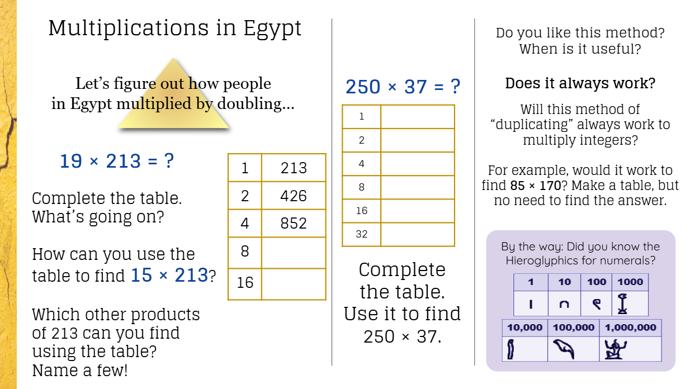
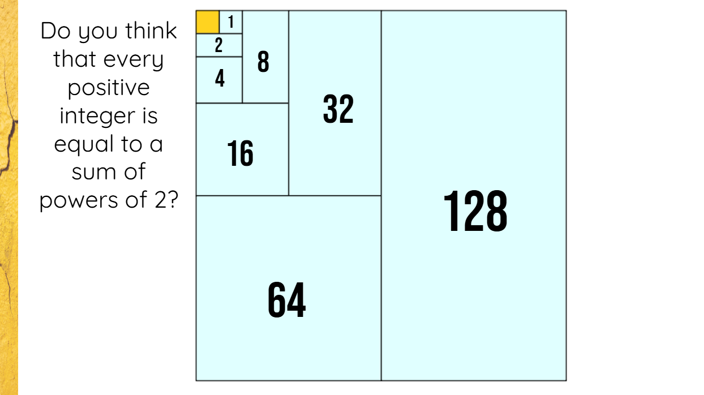
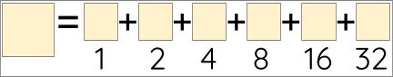

Section Dimension 3: Deep thinking
This dimension drives the design of disciplinary and enrichment activities, and sets the expectation that both the curriculum and the mentors should demand high level thinking from students, so that they are reasonably challenged, learn new concepts, go beyond procedures, and use holistic thinking, logical reasoning and critical thinking, including modeling. Thinking questions are used for advancing understanding.
Many students begin the program with a negative attitude about their mathematical skill and math overall. It is common for students to feel so poorly about math that their perception of themselves prevents them from developing their mathematical and logical thinking. One of the first things that a mentor needs to do when working with students is to establish a genuine belief in their mathematical abilities. This also links with the mentor developing a relationship with the student; this relationship makes the student believe in their mentor’s opinions and therefore establishes a belief in themself.
In line with actively believing in the student’s ability and knowledge, we then have high expectations for students both inside and outside the program. This does not mean that we expect students to fully understand and master every activity, rather that students engage with every activity thinking that they are capable of understanding and mastering the activity, and they make the most out of it. In that setting we can challenge students beyond their normal math education, and oftentimes our curriculum brings new mathematical ideas that can bring an extra challenge and amplify student’s perceptions about the scope of mathematics.
Subsection Mentors’ Beliefs and Attitudes
-
I believe that every student can reason deeply when given careful guidance.
-
I believe that understanding comes from connecting ideas, patterns, and examples.
-
I believe that students’ thinking should be visible, celebrated, and discussed.
-
I believe that asking thoughtful questions helps students discover connections.
-
I believe that multiple approaches to a topic strengthen reasoning and help build flexible thinking.
-
I believe that persistence through challenges develops confidence and deeper understanding.
-
I believe that scaffolding and modeling help students reason more clearly.
-
I believe that encouraging students to justify their answers fosters responsibility and careful thinking.
-
I believe that connecting learning to students’ experiences makes abstract ideas more meaningful.
-
I believe that creating a supportive reasoning community motivates students to share and learn from peers.
Which other beliefs can shape your practice towards a teaching that promotes deep thinking?
Subsection Component 1: Prepare for deep ideas and connections
Get ready so that activities are geared toward deep reasoning and making connections.
Mentors’ Actions.
-
(Planning) Choose tasks that are rich in reasoning and allow for multiple entry points for all students.
-
(Planning) Understand the content deeply, including logical connections, overarching ideas, and frequent misconceptions.
-
(Planning) Set and communicate high-level learning goals that go beyond surface knowledge.
-
(Planning) Prepare thinking questions for the various moments of teaching, connected with the learning goals.
-
(Planning) Prepare spoken, visual or interactive supports that help illustrate logical connections. This includes analogies and metaphors.
Students’ Perspectives.
-
“I like that the tasks are hard but not impossible.”
-
“I know what we’re trying to learn, and it makes sense.”
-
“I feel ready because the questions help me think step by step.”
-
“I can start problems without getting totally confused, thanks to the way they explain.”
-
“I feel like I actually understand the topic, not just memorize stuff.”
Subsection Component 2: Pave the way for deep thinking
Create a learning environment to encourage students to reason, notice patterns, and connect thinking.
Mentors’ Actions.
-
Use multiple examples and contrasting cases and situations (with variability) to build intuition, reveal patterns, and uncover misconceptions.
-
Ask students to compare and contrast different contexts or real-world situations to deepen understanding.
-
Encourage students to justify their answers and help them explain or uncover their assumptions.
-
Ask questions that gently, but firmly, challenge students’ current understanding.
-
Promote, mostly, elaborated answers instead of brief or yes/no or closed responses.
-
Encourage multiple reasoning paths to justify claims, positions, or answers.
-
Illustrate intentional mistakes or narrow perspectives that highlight gaps in reasoning, and discuss them.
-
Foster peer discussions where students analyze and critique each other’s reasoning.
Students’ Perspectives.
-
“I like that we get to explain our thinking, not just give the answer.”
-
“I notice patterns now that I didn’t see before.”
-
“I feel good when I can see more than one way to solve it.”
-
“Mistakes actually help me figure out what I don’t understand.”
-
“I like comparing my solution with friends and seeing different ideas.”
Subsection Component 3: Support reasoning strategically
Help students clarify their thinking, scaffold their reasoning, and overcome conceptual challenges.
Mentors’ Actions.
-
Give students chances to make their thinking visible (not just the answer) through speaking, writing, charts, diagrams, or other representations.
-
Help students abstract core ideas and concepts in different levels of complexity.
-
Offer explicit reasoning support, including sentence frames, modeling, and worked examples that include explicit reasoning.
-
Address misconceptions through prompts, questions, and guided exploration.
-
Celebrate partial reasoning or creative approaches to encourage risk-taking.
-
Encourage students to explain their reasoning to peers, fostering accountability and clarity.
-
Give feedback that focuses on the thinking process rather than only the final answer.
Students’ Perspectives.
-
“I like that I can draw or write my ideas, not just say an answer.”
-
“I feel supported when they show me a way to explain my reasoning.”
-
“It helps me when I can connect new stuff to what I already know.”
-
“I feel proud when I explain my thinking to others and they understand.”
-
“I like that my mentor notices my ideas, even if they’re not perfect.”
Subsection Component 4: Guide through challenges
Encourage persistence, resilience, and productive struggle in problem-solving.
Mentors’ Actions.
-
Show continuously that you believe in students’ ability to reason deeply.
-
Offer strategic hints or new questions, rather than giving answers outright.
-
Encourage persistence through challenging tasks. (Stress that the task can be hard, but that persisting pays off.)
-
Adjust challenges to ensure productive struggle, not absolute frustration.
-
Support students in setting personal goals to push their thinking further.
Students’ Perspectives.
-
“I feel like I can keep going even when it gets hard.”
-
“I like that my mentor believes that I can figure it out.”
-
“It feels good to finally solve a tricky problem by myself.”
-
“I like when they give just enough help without giving the answer.”
-
“I feel more confident because I know I can try different strategies.”
Subsection Specific Actions by Subject Area
Mathematics.
-
Use mathematical concepts in real world situations to develop modeling skills.
-
Encourage students to make conjectures, test them, and try to justify why they are true or they fail.
-
Encourage students to justify their answers and push for abstraction and generalization.
Science.
-
Encourage students to design experiments or simulations to test their ideas.
-
Ask students to explain phenomena using evidence and reasoning, not just memorization.
-
Connect scientific concepts to real-world problems and everyday observations.
Language Arts.
-
Encourage students to support interpretations of texts with evidence and reasoning.
-
Ask students to compare multiple perspectives, themes, or character motivations.
-
Prompt students to make connections between texts and personal experiences or society.
History.
-
Ask students to justify historical claims using evidence from multiple sources.
-
Encourage students to analyze cause and effect in historical events.
-
Support students in connecting past events to current social issues or patterns.
Biology.
-
Encourage students to explain biological processes with diagrams, models, or reasoning.
-
Ask students to predict outcomes of experiments or ecological interactions.
-
Connect biological concepts to real-world contexts, like health, environment, or society.
Subsection Case Study: Multiplications in Egypt (Powers of 2)
In this activity, students make sense of a particular method for multiplication from ancient Egypt (“duplication”). In this method, we double one of the multiplicands repeatedly, record the results on a table, and then add some of them to find the answer. To see which of them, students think about powers of 2 (1, 2, 4, 8, …) and binary representations, which are the main concepts of the activity.

A teaching slide introducing the Egyptian multiplication method by doubling. It shows a table being completed for 19 times 213, and asks students to find other products of 213.

A diagram showing the powers of 2 (1, 2, 4, 8, 16, 32, 64, 128) arranged as nested squares, with the question: do you think that every positive integer is equal to a sum of powers of 2?
Example: 19 is \(1 + 2 + 16\text{,}\) and so \(19 \times 213\) is found by adding the values in rows \(\#1\text{,}\) \(\#2\text{,}\) and \(\#5\text{.}\)
Students will investigate if this method just works sometimes, if we are “lucky”, or if it always works. This naturally leads them to investigate whether every positive integer is equal to a sum of powers of 2.
This activity is accessible for many students from the start, but allows for deep thinking and logical reasoning, and generalizations or extensions. Let’s go through some to see how a mentor can excel in teaching it!
Subsubsection Action: Prepare for Deep Content and Relational Structures
This activity is accessible, as all students can engage with the computations, and use the table to explain their thinking. As the activity progresses, more reasoning opportunities open up.
Planning Notes.
Mentors can plan this activity keeping the following points in mind:
-
The first tasks relate to the distributive property, \(a(b+c) = ab + ac\text{,}\) and should use it to justify why the Egyptian method works.
-
Although not all values of the table will be used in the final sum, it’s important not to skip any because to find each new value, you need to know the previous one.
-
When finding \(a \times b\text{,}\) you can choose any of the two numbers to double, but it’s probably best to pick the largest one. This is because the other number is the one whose binary decomposition we need to find. Students may be confused about this.
-
Students should realize that the method is particularly fast if one of the multiplicands is a power of 2.
-
Students should connect the question “does this method always work?” with “is every positive integer a sum of powers of 2?” The answer is: yes. The heart of the activity will be convincing ourselves that this is the case. Students may think that sometimes it’s not possible.
-
A key insight to see the main result has to do with thinking inductively. No need to formally introduce mathematical induction, but rather to explain it informally and use it in particular examples.
-
Students may confuse powers of 2 with multiples of 2. Pay attention.
-
Students may think that 1 is not a power of 2, but it’s the “first” one, and it’s needed always for the odd numbers (you can reason why).
Learning Goals.
Mentors can keep these high-level learning goals (and communicate them through the session in different ways):
-
Students should describe the Egyptian method in their own words.
-
Students should practice mental math when doubling values, and number sense when finding the powers of two that add to a number. For example, strategically start with the highest possible power of two that does not go past the number.
-
Students should convince themselves that every positive integer is a sum of powers of two. While a formal proof is not needed, a good intuition and explanation should happen during the session. Binary representations will be helpful. Advanced students can also think about the uniqueness (the sum is unique).
Thinking Questions.
Mentors can plan thinking questions ahead. Here are examples:
-
“Can we choose any of the numbers to be the initial value in the table? If so, which is more convenient? Give me examples.”
-
“Why does the method work? Can you write an equation?”
-
“What would we need for the method to always work?”
-
“When trying to express this number as a sum of powers of two, which strategy did you use?”
-
“Do we need, sometimes, more than one instance of a particular power of two? Why?”
-
“39 is \(32 + 4 + 2 + 1\text{.}\) Can you use this to find 40 as a sum of powers of 2? How? How about from an even number \(Y\) to \(Y+1\text{?}\)”
-
“Suppose that we know that \(X\) is a sum of powers of 2, so it has a “code” of 0’s and 1’s. Can you use this to see if \(X+1\) is also a sum of powers of 2? What can the new code look like?”
Supports.
Mentors can prepare supports to help illustrate logical connections, such as:
-
Analogies between the decimal system and the binary system.
-
Use of fingers to express binary numbers in a fast and playful way, by matching fingers to powers of 2 in a specific order.
-
A “binary mat” that helps represent numbers as sums of powers of two, where students can place tokens in “active” powers of 2 that are used in the sum. This manipulative allows us to reason inductively about sums of powers of 2, and to make sense of the more abstract binary representation.

Figure 4. Decomposing a number as a sum of powers of 2. -
An analogy to money: we have weird bills, one of each: $1, $2, $4, $8, $16, …, $128. Then we can buy anything costing an integer value and we don’t need change! (Ask to check that students see that we can buy things up to $255.)
Subsubsection Action: Pave the Way for Deep Thinking
Create a learning environment to encourage students to reason, notice patterns, and connect ideas.
Examples and Contrasting Cases.
Here are cases and examples that mentors can use to build intuition, reveal patterns, and uncover misconceptions:
-
For a given product \(XY\text{,}\) use the table in two ways: first, starting with \(X\text{,}\) and then starting with \(Y\text{.}\) Discuss which was more convenient.
-
Have students see the relation between the binary sums for two consecutive numbers (\(X\text{,}\) \(X+1\)).
-
Explore what happens to a binary sum when we double a number (it just “shifts”) (\(X\text{,}\) \(2X\)).
Real-World Connections.
-
Discuss the trick for multiplying by 4 (doubling twice), or multiplying by 8 (doubling 3 times), and relate this to the Egyptian table.
-
Discuss bits and bytes, and connect to the context of computers and represent information using binary codes.
-
Use a “decimal” table (similar to the usual base 10 algorithm) to find a product, to help understand the Egyptian method. (Example: \(342 \times 7\))
| \(1\) | \(7\) |
| \(2\) | \(14\) |
| \(10\) | \(70\) |
| \(40\) | \(280\) |
| \(100\) | \(700\) |
| \(300\) | \(2100\) |
Encouraging Justification.
Mentors can encourage students to justify their answers and help them explain or uncover their assumptions. In particular:
-
Have students justify why we should not add all the rows in the second column.
-
If students answer that the method always works, have students realize that they are assuming that we can always express numbers as sums of powers of two, and that we should try to convince ourselves that this is always possible.
Challenging Questions.
Mentors should ask questions to challenge students’ understanding. For example:
-
If students seem to learn the method, but not why it works, ask them how they know that the answer is, indeed, the value of the product.
-
If students are unsure about which first steps could be used to express a number as a sum of powers of two, guide them to start with a number (say, 50), look for the largest power of 2 below it (32), and write 50 as 32 plus something (\(32 + 18\)), and then repeat the steps for 18, to realize a way.
Following Up on Closed Responses.
After yes/no or closed responses, mentors should follow up with questions or prompts. For example:
-
If students say that it’s obvious that the method works, ask them to write equations to convince you (they should use the distributive property).
-
If students say that we can choose any number as the initial value for the table, ask them why, and if there’s an advantage for picking one number instead of the other one.
-
If students say that every positive integer is a sum of powers of 2, ask them to convince you of this in general. Help them reason with a general case, for example going from \(X\) to \(X+1\) (using binary notation is useful).
Reasoning Paths.
Mentors can encourage various reasoning paths to justify their conclusions. This is particularly helpful to see why every positive integer is a sum of powers of 2. Include these paths (some have more generality, but the others are still useful to build intuition and relational knowledge):
-
Do lots of examples and see how one always succeeds. (As you do this, check for patterns.)
-
Informal induction: See how from the binary representation of \(X\text{,}\) one can produce the one for \(X+1\) (look for the first “0”: it will turn into a 1, and the “1”’s before will reset to 0). This involves lots of discussion.
-
Informal induction: Do two cases: if \(X\) is odd, then you just add a 1 to the \(2^0\) position for \(X-1\text{.}\) If \(X\) is even, then look at \(Y = X/2\text{,}\) and see how you can produce the new binary sequence from there.
-
“Removing” the largest power of 2: Start with \(X\text{,}\) and look for the largest power of 2 that is less or equal to \(X\text{.}\) Subtract it from \(X\) to get \(Y\text{.}\) If \(Y=0\) or you can easily build the sum for \(Y\text{,}\) then the sum for \(X\) is easy. Otherwise, repeat the action: look for the largest power of 2 that is less or equal to \(Y\text{,}\) and subtract it.
Peer Discussion.
-
Illustrate intentional mistakes or narrow perspectives that highlight gaps in reasoning, and discuss them.
-
Foster peer discussions where students analyze and critique each other’s reasoning.
Subsubsection Action: Support Students’ Attempts at Reasoning
Help students clarify their thinking, scaffold their reasoning, and overcome conceptual challenges.
Subsubsection Action: Guide Students Through Challenges
Encourage persistence, resilience, and productive struggle in problem-solving.